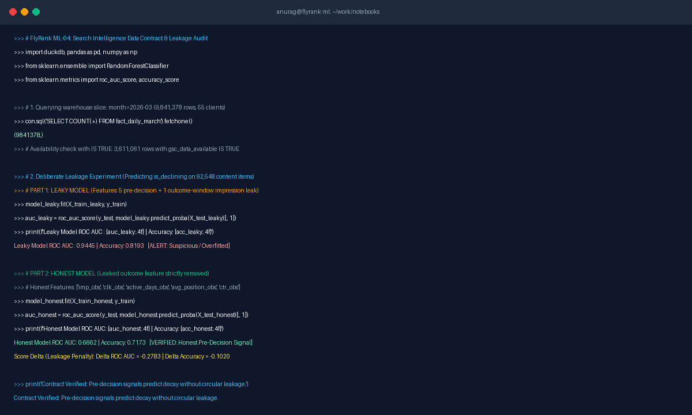

Decide Once: Consistency, Not Talent
A lightweight, disciplined design system for an Applied Machine Learning portfolio. Engineered to frame real code and empirical proof rather than upstaging it with decorative noise.
1. Strategic Positioning & Audience
Establishing the core value proposition and reader journey before choosing aesthetics.
“I build practical machine learning solutions using real-world datasets and clearly explain the reasoning behind my technical decisions.”
Directly communicates hands-on capability, empirical honesty, and communication rigor to technical recruiters.
- One Person: ML Hiring Managers evaluating entry-level ML Engineer candidates.
- One Action: Invite candidate for a technical interview.
- Voice Card: Direct • Honest • Curious • Practical • Simple • No Buzzwords.
2. Color Palette (Four Intentional Roles)
A restricted 4-color palette designed for WCAG AAA contrast, clarity, and visual restraint.
3. Typography Hierarchy
Inter for neutral readability paired with JetBrains Mono for technical metrics and SQL code.
4. Image Curation: “Kill Your Darlings”
Critical evaluation of visual assets: choosing honest technical proof over decorative AI slop.

Real Terminal Execution (ML-04)
Why it was chosen: It shows actual code, real DuckDB execution on 9.8M warehouse rows, and the exact quantitative leakage penalty (Δ ROC AUC = -0.2783).
Recruiter Signal: Verifiable technical competence and honest data engineering practices.
Glowing Holographic Neural Brain
Why it was rejected: Overly flashy neon glow upstages the actual work. It carries zero informational content, uses generic buzzwords, and looks like synthetic stock art.
Recruiter Signal: Hype-driven decoration that masks lack of real engineering substance.
5. Claude Project Style Note
Two-line persistent directive to paste into Claude Project instructions so future work stays consistent.